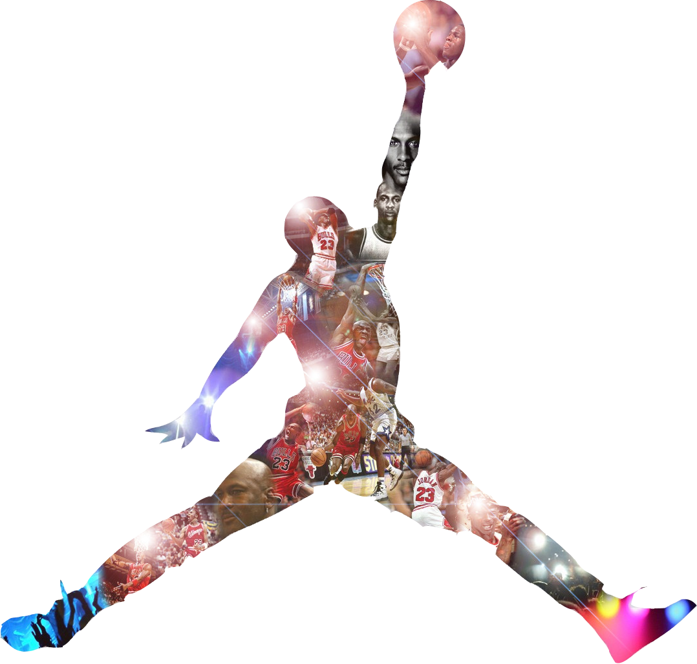

Air Jordan
Les Air Jordan 1 ont façonné l'histoire du sponsoring et redoré le blazon de Nike! Retrouvez ces extraordinaire sneakers dans leur version retro!
169 €
199,99 €
Les Air Jordan 1 ont façonné l'histoire du sponsoring et redoré le blazon de Nike! Retrouvez ces extraordinaire sneakers dans leur version retro!
169 €
199,99 €


L’histoire de la marque est directement liée à la carrière du légendaire joueur de basketball Michael Jordan, qui donnera son nom à l’enseigne sportive. Durant les années 80, l’équipement du basketball professionnel était dominé par trois grandes marques : Converse, Adidas et Nike. C’était également les débuts du sponsoring d’athlètes, ces dernières firent une proposition à Michael Jordan (qui était un rookie chez les Chicago Bulls à l’époque) pour qu’il porte leurs baskets pendant les matchs. C’est finalement Nike qui réussira à obtenir un contrat avec le joueur en 1984, moyennant un salaire de 500 000$ par an, 25% de commission sur chaque paire vendue et la création d’une ligne vestimentaire à son nom.
Michael Jordan avec ses Air Jordan 1 au Chicago Stadium (1984)
Dès la signature du contrat, Nike fournira une chaussure provisoire au joueur : une Nike Air Ship portant l’inscription « Air Jordan » en trois coloris, dont le fameux coloris rouge et noir “Bred” (pour black and red). La NBA décidera de bannir cette dernière du fait de son coloris trop différent des autres joueurs et du non-respect de l’uniforme. Une première amende de 5000 dollars tombe finalement et est automatiquement reconduite à chaque manquement à cette règle d’uniformité. Nike va se servir de l’intransigeance de la ligue pour créer l’une des campagnes de pub les plus mythiques des années 80. Un plan sur Michael Jordan, qui part de son visage pour arriver à des Air Jordan 1 censurées, pendant qu’une voix off explique : “Le 15 septembre, Nike a créé une nouvelle chaussure de basketball révolutionnaire. Le 18 octobre, la NBA l’a exclu du jeu. Heureusement, la NBA ne peut pas vous empêcher de les porter.” L’opération est un grand succès faisant de la Air Jordan Bred “Banned” le symbole de la rébellion des jeunes.
Spot publicitaire avec les air jordan 1 censurés
Disponible pour le grand public à partir du 1er avril 1985, la Air Jordan 1 est un carton immédiat. Moins d’un an après sa sortie aux États-Unis, 450 000 exemplaires de la Air Jordan I seront vendus par Nike. L’année suivante, la marque au swoosh sortira la Air Jordan II dont le style ne convaincra pas Michael Jordan. C’est Tinker Hatfield, le designer de la Air Max One qui permettra à Nike de garder Michael Jordan en sortant la fameuse Jordan III et toute une collection de survêtements Jordan en 1988. Cette collection sera une grande réussite et convaincra Jordan de continuer sa collaboration avec Nike.
Croquis Air Jordan 3
La gamme Air Jordan de Nike devenant de plus en plus populaire, le “swoosh”, emblématique logo de Nike, n’apparaît plus sur les produits à partir de la Jordan VII en 1992. En 1997, Jordan devient une marque distincte de Nike, la Jordan brand est née.
